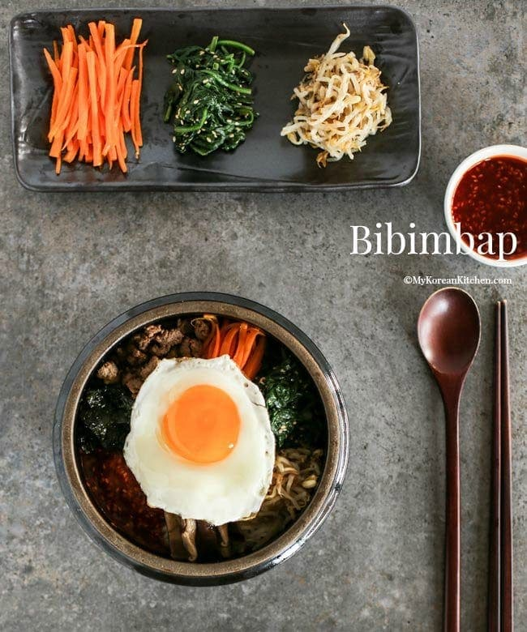
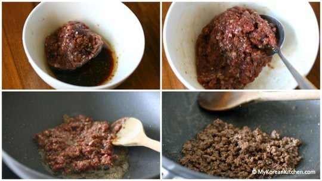
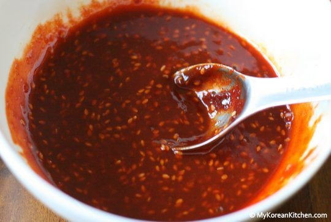
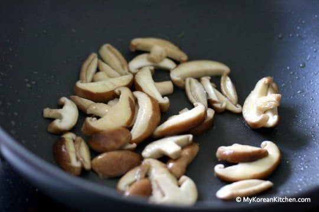
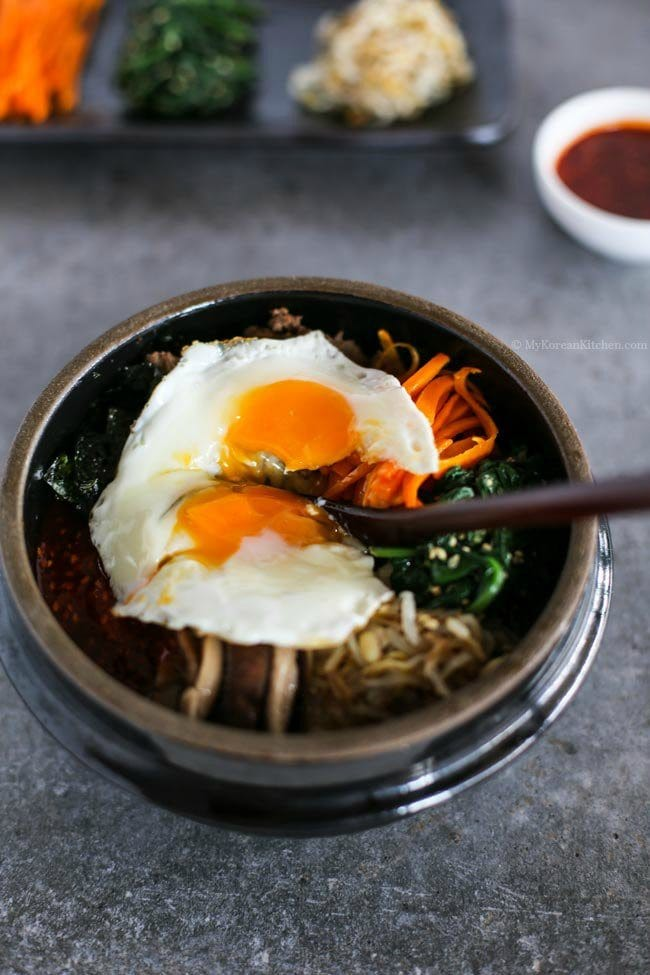

Bibimbap

Bibimbap simply translates to "Mixed rice with meat and assorted vegetables" You can make endless variations to this dish depending on your preference and dietary requirements.
Ingredients for Bibimbap
Meat and Meat Sauce
- 100g / 3.5 ounces beef mince
- 1 Tbsp soy sauce
- 1 Tbsp sesame oil
- 1 tsp brown sugar
- 1/4 tsp minced garlic
Vegetables and Others
- 250g seasoned spinach
- 350g seasoned bean sprouts
- 100g shiitake mushroom
- 120g carrots
- 1/2 tsp fine sea salt
- 3 to 4 serving portions of steamed rice
- 3 or 4 eggs
- Some cooking oil
- Some toasted seasoned seaweed
Bibimbap Sauce
- 2 Tbsp gochujang
- 1 Tbsp sesame oil
- 1 Tbsp sugar
- 1 Tbsp water
- 1 Tbsp roasted sesame seeds
- 1 tsp vinegar
- 1 tsp minced garlic
How to make Bibimbap
- Prepare and cook ingredients as below
- For meat, mix the beef mince with the meat sauce listed above.
Marinate the meat for about 30 mins while you are working on other ingredients to enhance the flavour.
Add some cooking oil into a wok and cook the meat on medium high to high heat. It takes about 3 to 5 mins to thoroughly cook it

- Mix the bibimbap sauce ingredients in a bowl

- Cook
spinach
and
sprouts
per linked recipe
- Rinse, peel and julienne the carrots. Add some cooking oil and 1/4 tsp of fine sea salt in a wok and cook the carrots on medium high to high heat for 2 to 3 mins

- Clean/rinse the shiitake mushrooms and thinly slice them. Add some cooking oil and 1/4 tsp of fine sea salt in a wok and cook the mushroom on medium high to high heat until they are all cooked (Takes 2 to 3 mins)

- Make fried eggs
- Put the rice into a bowl and add the meat, assorted vegetables, seasoned seaweed, bibimbap sauce, and the egg on top of the rice. Serve.

Source
Back to Home